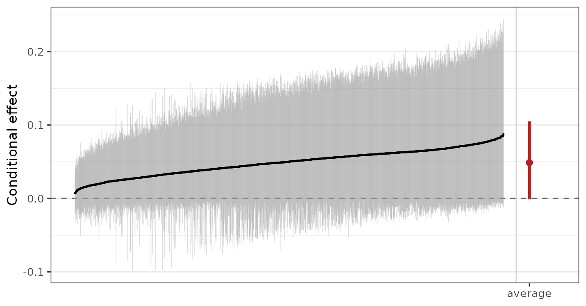
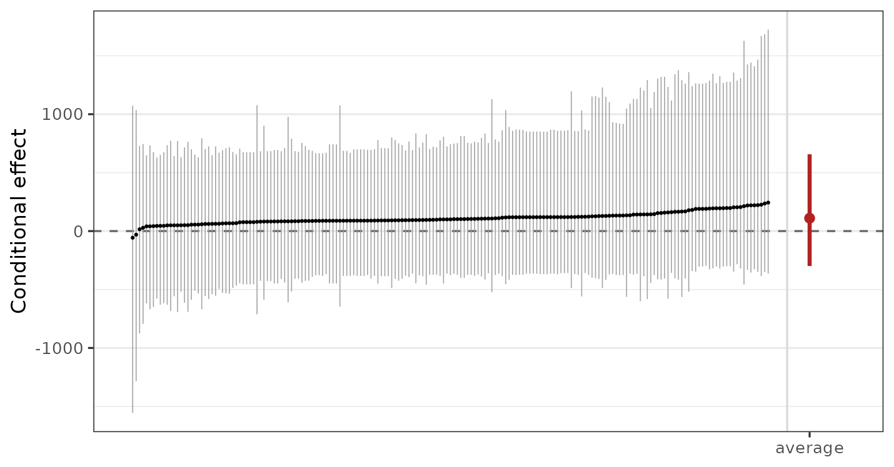

Introduction
BART is a popular choice for causal inference because it allows one to fit the nuisance functionals required for effect estimation (the relationships among the outcome, the treatment, and the potential confounders) in a flexible manner (Hill 2011). BART has repeatedly been shown to outperform other effect estimation methods in competitions (Dorie et al. 2019). In this vignette, we demonstrate how to use BART implemented in bartisan to estimate treatment effects under the assumption of no unmeasured confounding. This includes both standard BART as well as Bayesian causal forests (BCF), which is an improvement on traditional BART that works by fitting separate BART models for the outcome under control and for the treatment effect itself as a varying coefficient model.
However, it’s important to remember that BART is not a “causal inference method”; it is just a method of estimating certain quantities, which often are interpretable as associations. The assumptions that turn an association into a causal effect are assumptions about the design, and no model supplies them.
In addition to its use here, BART can be used with instrumental variables analysis (McCulloch et al., n.d.), regression discontinuity (Alcantara et al., n.d.), and difference-in-differences (Souto and Neto, n.d.).
The example we use here is a dataset used to answer whether right heart catheterization helps or harms critically ill patients (Connors et al. 1996).
Confounding
Catheterization was not randomized. Doctors chose it, and they chose
it more often for patients who were already doing badly. Those patients
were also more likely to die. We can use cobalt::bal.tab()
to see how the patients differ between groups:
bal.tab(rhc ~ age + sex + race + edu + aps + meanbp + resp +
hema + pafi + paco2 + crea + surv2m + card,
data = rhc, stats = c("m", "ovl"), disp = "m")
#> Balance Measures
#> Type M.0.Un M.1.Un Diff.Un OVL.Un
#> age Contin. 61.816 60.756 -0.065 0.101
#> sex_male Binary 0.524 0.591 0.067 0.067
#> race_white Binary 0.793 0.768 -0.024 0.024
#> race_black Binary 0.157 0.168 0.011 0.011
#> race_other Binary 0.050 0.064 0.013 0.013
#> edu Contin. 11.568 11.767 0.061 0.048
#> aps Contin. 51.369 62.099 0.530 0.223
#> meanbp Contin. 85.302 66.871 -0.505 0.231
#> resp Contin. 28.841 27.465 -0.097 0.055
#> hema Contin. 32.545 30.237 -0.290 0.159
#> pafi Contin. 238.232 182.995 -0.504 0.208
#> paco2 Contin. 40.045 36.871 -0.262 0.096
#> crea Contin. 1.905 2.506 0.292 0.179
#> surv2m Contin. 0.604 0.559 -0.229 0.105
#> card_yes Binary 0.299 0.405 0.106 0.106
#>
#> Sample sizes
#> Control Treated
#> All 935 565The M.0.Un column indicates the mean for each variable
in control group and the M.1.Un column indicates the mean
for each variable in treated group. Diff.Un and
OVL.Un are measures of the distributional difference
between the groups for each covariate; values far from 0 indicate
imbalance due to differential selection into treatment. In particular,
we can see that patients with higher values of aps and
crea and lower values of meanbp, hema,
pafi, paco2, and surv2m are
overrepresented among treated units.
Given that sicker patients are both more likely to die and more likely to receive RHC, it would not be unexpected to see that patients who receive RHC are more likely to die, and we do see that:
However, that doesn’t mean RHC causes death; to disentangle the effects of RHC from the confounding effects of patients’ characteristics, we need to adjust for these characteristics.
Assumptions for Causal Inference
Several assumptions are required to interpret an adjusted effect estimate as causal, none of which the fit can check:
No unmeasured confounding. Every common cause of catheterization and death is in the model. Here that is the crux: the covariates include a physiological profile and the study’s own prognostic score, which is a serious attempt, but a doctor’s judgment at the bedside may not be fully captured by these thirteen variables.
Positivity. Every kind of patient could have received the procedure or not. This one is partly checkable and is checked below.
Consistency. “Catheterization” names a single well defined intervention.
No interference. One patient’s treatment does not affect another’s outcome.
The first is the one that usually fails and the one to be explicit about. State it as an assumption in what you write, rather than letting the interval imply it has been handled.
Checking positivity
Positivity fails when some combination of covariates makes the treatment nearly certain. To look for that, model the treatment and inspect the fitted probabilities in both groups. BART is a good choice for this model too, for the same reason it is a good choice for the outcome: the functional form is not known.
ps_fit <- bartisan(
rhc ~ age + sex + race + edu + aps + meanbp + resp + hema + pafi +
paco2 + crea + surv2m + card,
data = rhc, family = binomial(), chains = 4
)
prop_score <- fitted(ps_fit)We can use cobalt::bal.plot() to examine the overlap of
the propensity score distribution between the groups:
bal.plot(rhc ~ prop_score, data = rhc, type = "hist", mirror = TRUE)
What matters for positivity is that the two groups overlap over most of their range, and they do. Distributions pushed against zero and one with little overlap are what failure looks like, and the honest response then is to restrict the analysis to the region of overlap rather than let the model extrapolate into a part of the covariate space where one treatment was never observed.
This check belongs before the outcome model, not after. A flexible outcome model will happily produce an estimate in a region with no data, and the interval will not tell you that is what happened.
The Estimator: G-computation
To estimate the average treatment effect \(\tau_{\text{ATE}} = E[Y(1)] - E[Y(0)]\), which is a function of the unobserved potential outcomes \(Y(1)\) and \(Y(0)\), we can use the assumptions above to express it as a function of observed quantities:
\[E[Y(1)] - E[Y(0)] = E \left[ E[Y | X, A = 1] \right] - E \left[ E[Y | X, A = 0] \right]\] To estimate \(E \left[ E \left[ Y | X, A = a \right] \right] = \theta_a\), we use g-computation (Snowden et al. 2011):
\[\hat{\theta}_a = \frac{1}{n}\sum_{i=1}^n {\mu(a, x_i)}\]
where \(\mu(a, x_i)\) is the predicted value from a regression of \(Y\) on \(A\) and \(X\) for a unit with covariate profile \(X=x_i\) and treatment \(A\) set to \(a\). This estimator is sometimes also known as the “regression estimator” or the “plug-in estimator”.
Here, we use traditional BART and BCF to model \(\mu(A, X)\). The rest of the analysis comes from the definitions above.
Controlling Sparsity
Before we fit the outcome model, we need to change one setting to
make traditional BART suitable for estimating the ATE. The default
splitting prior is a variable-selection prior. It can drop a predictor
from every tree in the forest at once, which is what makes it worth
having when the goal is prediction, and exactly what you do not want
when the estimand is a contrast on one particular predictor. Every
outcome model below is fitted with sparsity = FALSE, which
weights the predictors equally and cannot drop any of them.
The propensity score model above keeps the default, and should:
predicting who was treated is a prediction problem, and no contrast is
read off it. ?bartisan_control explains both halves of
this, and split_prior is the alternative when there are
enough covariates that weighting them all alike is wasteful.
The outcome model
We can fit the outcome model as a simple binary BART regression of the outcome on the treatment and covariates, as in Hill (2011):
fit <- bartisan(death ~ rhc + age + sex + race + edu + aps + meanbp + resp +
hema + pafi + paco2 + crea + surv2m + card,
data = rhc, family = binomial(),
chains = 4, sparsity = FALSE)We include both the treatment and covariate in the formula’s
right-hand side, set family = binomial() to model the
binary outcome with logistic regression, and
sparsity = FALSE to remove the sparsity-inducing prior. We
could also have included the propensity score as a covariate, which is
recommended by Carnegie (2019) to slightly improve
performance (in this case it doesn’t affect the result, which has also
been reported by Souto and Louzada (n.d.)). Normally,
we would examine convergence diagnostics for this model to make sure it
was fit correctly; see vignette("diagnostics") for more
information on how to do that.
Potential outcomes
The quantities underlying the effect estimate are the two average
potential outcomes: the proportion who would die if every patient were
catheterized, and if none were. estimate_effect() computes
them on the way to the effect and prints them beneath it. On a fit from
bartisan() the treatment has to be named, since nothing in
the formula marks one predictor as the treatment:
ate <- estimate_effect(fit, treatment = "rhc")
ate
#> Average treatment effect (difference)
#>
#> Treatment: "rhc"
#> Averaged over 1500 units
#>
#> contrast estimate lower upper n
#> Y[1] - Y[0] 0.0626 0.0158 0.11 1500
#>
#> Average potential outcomes
#>
#> quantity estimate lower upper
#> Y[0] 0.631 0.602 0.660
#> Y[1] 0.694 0.656 0.729
#>
#> ℹ estimate is the posterior mean; lower and upper bound the 95% equal-tailed
#> credible interval.
#> ℹ Y[a] is the average response with "rhc" set to a.Under the assumptions above this is the average treatment effect: catheterization raises the probability of death by about 6 percentage points, with an interval running from roughly 1.6 to 11.
The two rows below the contrast are the estimates of \(E[Y(0)]\) and \(E[Y(1)]\), each averaged over the observed
covariate distribution. Reporting both is often more informative than
reporting their difference alone, because a difference of a few
percentage points means something different against a baseline of 63%
than it would against 5%. potential_outcomes = FALSE in the
print() call drops them where the difference is all that is
wanted.
How the estimate is computed, and on which scale
estimate_effect() performs the g-computation above
literally. Every unit is predicted twice, once with the treatment set to
each of its levels; the two sets of predictions are averaged over the
units the estimand asks for, within each posterior draw; and
only then are the two averages contrasted. What comes back is a
posterior for the estimand, summarized by its mean and a credible
interval.
That order is what makes a ratio here the marginal ratio rather than the average of the conditional ones, which is a different quantity. For a difference the two orders agree, so it only shows up once a ratio is asked for.
The scale matters, and it is the reason the default is
type = "response". On that scale the average of the
unit-level differences is the marginal effect. A contrast read
off the link scale is not: on a logistic fit the average of the
conditional log odds ratios is not the marginal log odds ratio, and the
two can differ by a good deal. comparison asks for the
contrast rather than the scale, so a risk ratio or an odds ratio is
available without leaving the response scale:
estimate_effect(fit, treatment = "rhc", comparison = "lnor")
#> Average treatment effect (log odds ratio)
#>
#> Treatment: "rhc"
#> Averaged over 1500 units
#>
#> contrast estimate lower upper n
#> log(O(Y[1]) / O(Y[0])) 0.282 0.07 0.497 1500
#>
#> Average potential outcomes
#>
#> quantity estimate lower upper
#> Y[0] 0.631 0.602 0.660
#> Y[1] 0.694 0.656 0.729
#>
#> ℹ estimate is the posterior mean; lower and upper bound the 95% equal-tailed
#> credible interval.
#> ℹ Y[a] is the average response with "rhc" set to a, and O(y) is the odds
#> `y/(1-y)`.The same answer through marginaleffects
A fit also works with marginaleffects, and for the average
effect the two routes compute the same thing from the same draws. The
one thing to set is the posterior summary: marginaleffects
reports the median by default and estimate_effect() reports
the mean, so an unadjusted comparison shows a difference that is not
there.
options(marginaleffects_posterior_center = "mean")
avg_comparisons(fit, variables = "rhc")
#>
#> Estimate 2.5 % 97.5 %
#> 0.0626 0.0158 0.11
#>
#> Term: rhc
#> Type: response
#> Comparison: 1 - 0The point estimate and the interval match
estimate_effect() above to machine precision. Which to
reach for is a question of what else is wanted:
estimate_effect() covers the estimands a treatment question
asks for and needs no extra package, while marginaleffects
covers a much wider class of quantities.
vignette("effects") is about the second.
Using Bayesian Causal Forests
Traditional BART shrinks the fitted function toward a constant; that shrinkage applies to everything the forest fits, including the part of the outcome that depends on the exposure. When the exposure is strongly predicted by the covariates, the forest can explain the outcome using the covariates alone, leaving little for the exposure to explain, and shrink the estimated effect toward zero. The interval shrinks with it, so the result is a confident estimate biased toward no effect.
Hahn et al. (2020) identified this mechanism; their
remedy is to give the treatment effect its own forest with its own
prior, so that shrinking the confounding part does not shrink the
effect. This is the Bayesian causal forest (BCF) model, a special case
of the varying coefficients BART model. bcf() fits it.
One specifies the control function in the model formula and
identifies the treatment in the treatment argument.
bcf() then fits a varying coefficient BART model, the BCF.
By default, bcf() estimates a propensity score using a
logistic BART model and includes that as a covariate in the control
function, as recommended by Hahn et al. (2020).
fit_bcf <- bcf(death ~ age + sex + race + edu + aps + meanbp + resp + hema +
pafi + paco2 + crea + surv2m + card,
treatment = ~ rhc, data = rhc,
family = binomial(), chains = 4)
fit_bcf
#> Generalized BART
#>
#> Call:
#> bcf(formula = death ~ age + sex + race + edu + aps + meanbp +
#> resp + hema + pafi + paco2 + crea + surv2m + card, treatment = ~rhc,
#> data = rhc, family = binomial(), chains = 4)
#>
#> Family: "binomial" with the "logit" link
#> Observations: 1500
#> Structure: 2 forests of 50 and 25 trees, soft decision rules
#> Draws: 3200 kept across 4 chains after 200 warmup
#>
#> Posterior means: b.rhc.0 = 0.00328, b.rhc.1 = -0.142
#>
#> Treatment: "rhc"
#> Effect moderators: "age", "sex", "race", "edu", "aps", "meanbp", "resp", "hema", "pafi", "paco2", "crea", "surv2m", and "card"
#> ℹ `estimate_effect()` reports the treatment effect, with the average potential
#> outcomes beside it; `plot()` draws the conditional ones.Using bcf() rather than writing the varying coefficient
BART model by hand sets four settings to improve effect estimation:
- the effect gets a forest of its own
- the estimated propensity score goes into the control function and not into the effect forest
- the effect forest gets fewer trees because effect heterogeneity is usually simpler than a prognostic surface
- a binary treatment’s coding is drawn rather than fixed, so the answer does not depend on which arm was written as 1.
Note that sparsity = FALSE is not among them: the reason
for it in the section above is that the prior can drop the predictor
whose contrast we want, and here the treatment is the coefficient rather
than a predictor the forest splits on, so nothing can drop it.
Because the treatment is named in the call,
estimate_effect() needs nothing else:
estimate_effect(fit_bcf)
#> Average treatment effect (difference)
#>
#> Treatment: "rhc"
#> Averaged over 1500 units
#>
#> contrast estimate lower upper n
#> Y[1] - Y[0] 0.0488 -0.00118 0.105 1500
#>
#> Average potential outcomes
#>
#> quantity estimate lower upper
#> Y[0] 0.636 0.604 0.665
#> Y[1] 0.685 0.644 0.725
#>
#> ℹ estimate is the posterior mean; lower and upper bound the 95% equal-tailed
#> credible interval.
#> ℹ Y[a] is the average response with "rhc" set to a.The two potential outcomes are printed beneath the contrast, since a
difference of a few percentage points means one thing against a baseline
of 64% and another against 5%; potential_outcomes = FALSE
in print() suppresses them. The contrast’s label names the
quantity rather than leaving it to the heading, which matters once a
ratio is asked for: Y[1] - Y[0] is a difference of average
responses where log(O(Y[1]) / O(Y[0])) is a log odds ratio,
and the note beneath the table says what Y[a] and
O(y) are.
summary() on a bcf() fit is the same
summary of the forests it is on any other fit, and says at the end where
the effect is reported. That way the same call means the same thing
whichever way the model was written.
Conditional effects
The effect forest gives one value per patient, and
estimate_effect() returns them with
estimand = "CATE". Here we ask for them as odds ratios,
which for a conditional effect is a conditional odds ratio:
cate <- estimate_effect(fit_bcf, estimand = "CATE", comparison = "or")
quantile(cate$estimate, probs = c(0, .25, .5, .75, 1))
#> 0% 25% 50% 75% 100%
#> 1.141 1.285 1.335 1.385 1.514plot() draws them: patients ordered by their estimate,
with a credible interval each, and the marginal effect as a single
interval past the right edge in its own color. Ordering is what makes
the spread readable as heterogeneity rather than as a list of numbers,
and keeping the average off to the side is what makes it comparable
against any of them.
plot(fit_bcf)
plot() on the fit is the conditional effects on the
response scale; passing a <bartisan_effect> object to
plot() draws whatever that object holds, so
plot(estimate_effect(fit_bcf, by = ~ sex)) is a subgroup
forest plot instead.
Note that a conditional odds ratio is not the marginal one, and their average is not it either. That is the scale caution from earlier in a second place: an average of conditional contrasts equals the marginal contrast only when the contrast is a difference. For an identity link, which the next example uses, the ATE is the average of the conditional effects.
A second example: a continuous outcome, and the ATT
The catheterization question is about a whole population, so the ATE is the estimand. Many questions are not. When a program is offered to a particular group and the question is whether it helped them, the ATT is what to report, and the outcome is often continuous rather than binary.
lalonde, from cobalt, is the standard example:
a job training program, with earnings in 1978 as the outcome.
Participants earned less than non-participants. Taken at face value, the program looks harmful, but that doesn’t mean it actually is: participants were selected for being out of work, so they would have earned less anyway. This is confounding in the opposite direction to the catheterization example, and it is why the raw comparison is worth showing before the adjusted one.
Below, we fit the BCF model, this time setting
family = dpm(), which is the default for a numeric outcome
and makes sense here. Earnings are heavily skewed with a spike at zero,
which a single normal describes badly; the Dirichlet process mixture
estimates the shape instead of assuming it, and costs almost nothing
when a normal would have done. Alternatively,
family = tweedie() can also work well for this type of
outcome. See vignette("families").
fit_earn_bcf <- bcf(
re78 ~ age + educ + race + married + nodegree + re74 + re75,
treatment = ~ treat,
data = lalonde, family = dpm(),
chains = 4
)
estimate_effect(fit_earn_bcf, estimand = "ATT")
#> Average treatment effect on the treated (difference)
#>
#> Treatment: "treat"
#> Averaged over the 185 units in group "1"
#>
#> contrast estimate lower upper n
#> Y[1] - Y[0] 110 -299 657 185
#>
#> Average potential outcomes
#>
#> quantity estimate lower upper
#> Y[0] 5590 2980 7700
#> Y[1] 5700 3080 7860
#>
#> ℹ estimate is the posterior mean; lower and upper bound the 95% equal-tailed
#> credible interval.
#> ℹ Y[a] is the average response with "treat" set to a.estimand = "ATT" averages over the treated rather than
over everyone, and focal is not needed because a 0/1
treatment settles which level is the treated one. Two cases do need it,
and they differ. When the treatment has more than two levels,
focal is required and naming it is the whole of the choice,
since "ATT" and "ATC" then mean the same
thing: the effect among the units in the level named. When it has two
levels whose labels say nothing about which is which, the level order is
assumed and a message says so, which focal silences.
The potential outcomes earn their place here: a few hundred dollars means something different against a baseline of six thousand than it would against six hundred.
Because the link is the identity, the ATT is exactly the average of the conditional effects among the treated, which is worth checking once to see that the two agree:
att <- estimate_effect(fit_earn_bcf, estimand = "ATT")
cate_att <- estimate_effect(fit_earn_bcf, estimand = "CATE",
newdata = subset(lalonde, treat == 1))
c(ATT = att$estimate, mean_CATE = mean(cate_att$estimate))
#> ATT mean_CATE
#> 110.3 110.3And the conditional effects, drawn:
plot(cate_att)
Most of the conditional effects are positive, as the ATT is, and none of their intervals excludes zero. That is the usual picture: a per-unit effect is estimated from far less information than an average, so the intervals are wide even where the average is clear.
What the credible interval means
The posterior interval is a credible interval for the estimand under the model and under the identification assumptions. It covers uncertainty from having a finite sample and from not knowing the shape of the outcome surface. It does not cover uncertainty about whether the assumptions hold.
An unmeasured confounder does not widen the interval. It moves the estimate and leaves the interval where it was. This is why a sensitivity analysis, asking how strong a confounder would have to be to explain the result away, is a more informative addition than any refinement of the model.
Where to go next
?estimate_effect is the reference for the estimands used
here, including the subgroup form and the contrast types.
vignette("effects") covers what marginaleffects
adds beyond them, which is a much wider class of quantities and the
route to take when the question is not a treatment contrast.
vignette("diagnostics") covers checking the fit, which
should happen before any of this is interpreted.